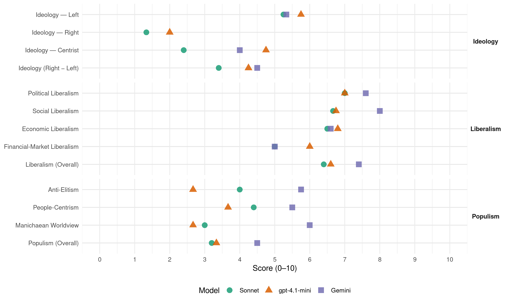

SDP BiH (Bosnia-Herzegovina, 2022)
manifesto_id 79321_202210
Get full text: This site shows derived annotations and short verbatim quotes only. The full manifesto text is © Manifesto Project / WZB — obtain it via manifesto-project.wzb.eu using the manifesto_id above.
Headline scores
| Dimension | Sonnet | gpt-4.1-mini | Gemini |
|---|---|---|---|
| Populism (Overall) | 3.2 | 3.3 | 4.5 |
| Anti-Elitism | 4.0 | 2.7 | 5.8 |
| People-Centrism | 4.4 | 3.7 | 5.5 |
| Manichaean Worldview | 3.0 | 2.7 | 6.0 |
| Ideology (Right − Left) | 3.4 | 4.2 | 4.5 |
| Liberalism (Overall) | 6.4 | 6.6 | 7.4 |
| Political Liberalism | 7.0 | 7.0 | 7.6 |
| Social Liberalism | 6.7 | 6.8 | 8.0 |
| Economic Liberalism | 6.5 | 6.8 | 6.6 |
| Financial-Market Liberalism | 5.0 | 6.0 | 5.0 |
Evidence per dimension
Economic Liberalism
Gemini · score 7.0 · verified · chunk 1
“privlačenjem direktnih stranih investicija”
otvaranjem novih radnih mjesta, novom strategijom industrijalizacije i privlačenjem direktnih stranih investicija.
Gemini · score 7.0 · verified · chunk 2
“uz poticanje razvoja privatnog sektora”
Zalažemo se za regulaciju tržišta i procesa zapošljavanja od strane države, ali uz poticanje razvoja privatnog sektora.
Gemini · score 7.0 · verified · chunk 3
“saradnju univerziteta (fakulteta) s privredom”
osiguravanje adekvatne zakonske osnove; pospješivati saradnju univerziteta (fakulteta) s privredom, odnosno s lokalnom zajednicom
Gemini · score 4.0 · verified · chunk 4
“Zaustavit ćemo privatizaciju kvalitetnih javnih preduzeća”
Zaustavit ćemo privatizaciju kvalitetnih javnih preduzeća poput BH telecoma, elektroprivrede Sarajevo, Mostar i Banja Luka.
Gemini · score 8.0 · verified · chunk 5
“članica Svjetke trgovinske organizacije”
Bosna i Hercegovina je nažalost jedna od rijetkih evropskih država koja nije članica Svjetke trgovinske organizacije (WTO).
gpt-4.1-mini · score 7.0 · verified · chunk 1
“Poreska reforma je veoma značajan instrument koji stoji na raspolaganju vlasti pri vođenju i razvojne i socijalne politike”
Poreska reforma je veoma značajan instrument koji stoji na raspolaganju vlasti pri vođenju i razvojne i socijalne politike, a koji zbog stalnog rasta javne potrošnje nije nikada adekvatno korišten.
gpt-4.1-mini · score 6.0 · verified · chunk 2
“Smatramo da je samo u harmoniji između radnika i poslodavaca moguće ostvariti značajan ekonomski napredak”
…Zalažemo se za regulaciju tržišta i procesa zapošljavanja od strane države, ali uz poticanje razvoja privatnog sektora. Smatramo da je samo u harmoniji između radnika i poslodavaca moguće ostvariti značajan ekonomski napredak i da država u tim procesima treba da pomaže i jednima i drugima…
gpt-4.1-mini · score 7.0 · verified · chunk 3
“snažnije privrede”
SDP BiH u središte procesa EU integracija želi staviti interes građana BiH, kroz insistiranje da bez obzira na zamor EU, BiH provodi reforme fokusirane na izgradnju pravne i uređene države, snažnije privrede, pravednijeg i modernijeg društva te bogatijih i zadovoljnijih građana.
gpt-4.1-mini · score 6.0 · verified · chunk 4
“Povećati broj i konkurentnost IKT stručnjaka, te povećati broj visokoprofitnih kompanija”
Naš plan je iskoristiti potencijal IKT industrije za povećanje zaposlenosti i općeg bogatstva, ubrzanje ekonomskog rasta BiH. Cilj je povećati broj i konkurentnost IKT stručnjaka, te povećati broj visokoprofitnih kompanija u okviru kreativnih industrija.
gpt-4.1-mini · score 8.0 · verified · chunk 5
“Članstvom u WTO Bosna i Hercegovina ima pristup porgramima i određenim povlasticama rezervisanim isključivo za članice organizacije”
Članstvom u WTO Bosna i Hercegovina ima pristup porgramima i određenim povlasticama rezervisanim isključivo za članice organizacije. Od članstva u WTO korist bi imali domaći poduzetnici i izvoznici koji će poslovati po povoljnijim uslovima i imati olakšan pristup stranim trzištima.
Sonnet · score 6.0 · verified · chunk 1
“Poticanje konkurentnosti privrede kroz stimulativnu poresku politiku”
KLJUČNI PROJEKTI Poticanje konkurentnosti privrede kroz stimulativnu poresku politiku Utemeljenje fondova za istraživanja i razvoj
Sonnet · score 6.0 · verified · chunk 2
“poticanje razvoja privatnog sektora”
Zalažemo se za regulaciju tržišta i procesa zapošljavanja od strane države, ali uz poticanje razvoja privatnog sektora
Sonnet · score 6.0 · verified · chunk 3
“tržišna ekonomija i međunarodna solidarnost”
zasnovan na temeljnim vrijednostima kao što su sloboda, demokratija, vladavina prava, tržišna ekonomija i međunarodna solidarnost
Sonnet · score 5.0 · mixed · chunk 4
“Zaustavit ćemo privatizaciju kvalitetnih javnih preduzeća”
Zaustavit ćemo privatizaciju kvalitetnih javnih preduzeća poput BH telecoma, elektroprivrede Sarajevo, Mostar i Banja Luka.
Sonnet · score 8.0 · verified · chunk 5
“olakšan pristup stranim trzištima”
domaći poduzetnici i izvoznici koji će poslovati po povoljnijim uslovima i imati olakšan pristup stranim trzištima
Financial-Market Liberalism
Gemini · score 5.0 · verified · chunk 1
“Uvođenje poreza na transakcije finansijskih institucija”
Pojednostavljenje i pojeftinjenje porezne administracije Pružanje veće pravne sigurnosti Smanjenje poreznog opterećenja rada Povećanje oporezivanja luksuza Uvođenje poreza na transakcije finansijskih institucija Uvođenje poreza priređivačima igara na sreću
gpt-4.1-mini · score 6.0 · verified · chunk 1
“Sredstva kojima raspolažu državne institucije, ministarstva i fondacije trebaju se iskoristiti za formiranje kreditnih linija i garantnih fondova po strateškim oblastima”
Sredstva kojima raspolažu državne institucije, ministarstva i fondacije trebaju se iskoristiti za formiranje kreditnih linija i garantnih fondova po strateškim oblastima, a kojima bi upravljale razvojne banke ili namjenske fondacije.
gpt-4.1-mini · score 6.0 · verified · chunk 3
“razmjenu informacija i resursa sa Uredom evropskog javnog tužitelja (EPPO) i Evropskim uredom za borbu protiv prevara (OLAF)”
Kroz međudržavne sporazume, osigurat ćemo aktivnu, transparentnu saradnju, razmjenu informacija i resursa sa Uredom evropskog javnog tužitelja (EPPO) i Evropskim uredom za borbu protiv prevara (OLAF), kako bi se spriječila i sankcionisala korupcija i zloupotreba domaćih resursa, ali i multimilionskih iznosa koje Bosni i Hercegovini dodjeljuje EU kroz različite projekte.
Sonnet · score 5.0 · mixed · chunk 1
“Uvođenje poreza na transakcije finansijskih institucija”
Povećanje oporezivanja luksuza Uvođenje poreza na transakcije finansijskih institucija Uvođenje poreza priređivačima igara na sreću
Sonnet · score 5.0 · verified · chunk 2
“niže kamatne stope na stambene kredite”
Osigurati ćemo niže kamatne stope na stambene kredite za mlade
Sonnet · score 5.0 · verified · chunk 4
“Formiranje Fonda za skupe lijekove”
Formiranje Fonda za skupe lijekove, dio sredstava od akciza na duhan i alkohol, uvođenje ‘poreza na luksuz’, donošenje Zakona o pripadnosti javnih prihoda.
Political Liberalism
Gemini · score 7.0 · verified · chunk 1
“političkom pluralizmu i jakoj ulozi”
blagostanju, socijalnoj pravdi, pluralizmu vlasništva, političkom pluralizmu i jakoj ulozi participativne demokratije i civilnog društva.
Gemini · score 8.0 · verified · chunk 2
“insistirati na nezavisnosti regulatornih tijela i operatora sistema”
SDP BiH će insistirati na nezavisnosti regulatornih tijela i operatora sistema, koji su zaduženi za provođenje akcionih planova
Gemini · score 8.0 · verified · chunk 3
“sloboda, demokratija, vladavina prava”
zasnovan na temeljnim vrijednostima kao što su sloboda, demokratija, vladavina prava, tržišna ekonomija i međunarodna solidarnost
Gemini · score 7.0 · verified · chunk 4
“praksu brojnih drugih demokratskih država”
Također, uveo bi se i princip tzv. saslušanja kandidata za ambasadore i konzule, po uzoru na praksu brojnih drugih demokratskih država, poput SAD-a.
Gemini · score 8.0 · verified · chunk 5
“praksu brojnih drugih demokratskih država”
Također, uveo bi se i princip tzv. saslušanja kandidata za ambasadore i konzule, po uzoru na praksu brojnih drugih demokratskih država, poput SAD-a.
gpt-4.1-mini · score 7.0 · verified · chunk 1
“SDP BiH se zalaže za humani, demokratski, održivi razvoj Bosne i Hercegovine zasnovan na socijalno odgovornoj tržišnoj privredi, socijalnom blagostanju, socijalnoj pravdi, pluralizmu vlasništva, političkom pluralizmu i jakoj ulozi participativne demokratije i civilnog društva.”
SDP BiH se zalaže za humani, demokratski, održivi razvoj Bosne i Hercegovine zasnovan na socijalno odgovornoj tržišnoj privredi, socijalnom blagostanju, socijalnoj pravdi, pluralizmu vlasništva, političkom pluralizmu i jakoj ulozi participativne demokratije i civilnog društva.
gpt-4.1-mini · score 7.0 · verified · chunk 2
“Ustavom i zakonima BiH svim osobama garantuju se osnovna ljudska prava”
…Ustavom i zakonima BiH svim osobama garantuju se osnovna ljudska prava među kojima i pravo na obrazovanje, a BiH se obavezala da će osigurati ostvarenje najvišeg nivoa zaštite međunarodno priznatih ljudskih prava i osnovnih sloboda…
gpt-4.1-mini · score 8.0 · verified · chunk 3
“vladavina prava”
SDP BiH će insistirati na vladavini prava, provođenju zakona, te građanskoj i krivičnoj odgovornosti izabranih zvaničnika za zloupotrebe položaja i rušenje poretka. Nepoštivanje ustavnog poretka i njegove manifestacije nisu predmet Krivičnog zakona i samim tim nisu kažnjivi. Isto se odnosi i na neusklađenost entitetskih propisa s državnim, naročito onima koji proističu iz različitih međunarodnih obaveza, uključujući evropske integracije. SDP BiH će insistirati na institucionalnom rješenju reforme Ustava Bosne i Hercegovine i njegovoj formalnopravnoj utemeljenosti. Ovakvo djelovanje, za razliku od djelovanja trenutnih vlasti u Bosni i Hercegovini, podrazumijeva efikasniji rad svih segmenata društva, počevši od sudova, tužilaštava, ali i policije i društva u cjelini.
gpt-4.1-mini · score 7.0 · verified · chunk 4
“Javna uprava na svim nivoima vlasti treba se zasnivati na principima zakonitosti, transparentnosti i javnosti”
Javna uprava na svim nivoima vlasti treba se zasnivati na principima zakonitosti, transparentnosti i javnosti, učinkovitosti i odgovornosti, profesionalne nepristrasnosti i političke neovisnosti.
gpt-4.1-mini · score 6.0 · verified · chunk 5
“Bosna i Hercegovina nema Zakon o vanjskim poslovima niti drugu vrstu stabilnog normativnog okvira”
NORMATIVNI OKVIR Bosna i Hercegovina je jedina država u širem regionu koja nema usvojen Zakon o vanjskim poslovima. Ukupna vanjska politika države zasnovana je na dokumentu koji je Predsjedništvo BiH usvojilo 2003. godine naziva „Opći pravci i prioriteti za provedbu vanjske politike“. Ovaj dokument je u značajnoj mjeri zastario i ne zadovoljava operativne potrebe vanjskopolitičkog djelovanja Bosne i Hercegovine.
Sonnet · score 7.0 · verified · chunk 1
“političkom pluralizmu i jakoj ulozi participativne demokratije”
socijalnoj pravdi, pluralizmu vlasništva, političkom pluralizmu i jakoj ulozi participativne demokratije i civilnog društva
Sonnet · score 6.0 · verified · chunk 2
“Depolitizirati ćemo rukovodeće pozicije”
Depolitizirati ćemo rukovodeće pozicije u obrazovanju i omogućiti da direktori škola budu najbolji i najsposobniji kadrovi
Sonnet · score 8.0 · verified · chunk 3
“vladavinu prava, provođenju zakona”
SDP BiH će insistirati na vladavini prava, provođenju zakona, te građanskoj i krivičnoj odgovornosti izabranih zvaničnika za zloupotrebe položaja
Sonnet · score 7.0 · verified · chunk 4
“vladavine prava i ekonomskog upravljanja”
Reforma javne uprave definisana je kao jedan od tri stuba uspjeha na putu ka članstvu u EU, pored vladavine prava i ekonomskog upravljanja, što je čini jednim od ključnih uslova
Sonnet · score 7.0 · verified · chunk 5
“po uzoru na praksu brojnih drugih demokratskih država”
uveo bi se i princip tzv. saslušanja kandidata za ambasadore i konzule, po uzoru na praksu brojnih drugih demokratskih država, poput SAD-a
Liberalism (Overall)
Gemini · score 7.0 · verified · chunk 1
“političkom pluralizmu i jakoj ulozi”
blagostanju, socijalnoj pravdi, pluralizmu vlasništva, političkom pluralizmu i jakoj ulozi participativne demokratije i civilnog društva.
Gemini · score 8.0 · verified · chunk 2
“insistirati na nezavisnosti regulatornih tijela i operatora sistema”
SDP BiH će insistirati na nezavisnosti regulatornih tijela i operatora sistema, koji su zaduženi za provođenje akcionih planova
Gemini · score 8.0 · verified · chunk 3
“sloboda, demokratija, vladavina prava”
zasnovan na temeljnim vrijednostima kao što su sloboda, demokratija, vladavina prava, tržišna ekonomija i međunarodna solidarnost
Gemini · score 6.0 · verified · chunk 4
“potpune ravnopravnosti svih građana”
Racionalizaciju treba izvršiti u ime potpune ravnopravnosti svih građana, bez obzira na to koje su nacije
Gemini · score 8.0 · verified · chunk 5
“članica Svjetke trgovinske organizacije”
Bosna i Hercegovina je nažalost jedna od rijetkih evropskih država koja nije članica Svjetke trgovinske organizacije (WTO).
gpt-4.1-mini · score 7.0 · verified · chunk 1
“SDP BiH se zalaže za humani, demokratski, održivi razvoj Bosne i Hercegovine zasnovan na socijalno odgovornoj tržišnoj privredi”
SDP BiH se zalaže za humani, demokratski, održivi razvoj Bosne i Hercegovine zasnovan na socijalno odgovornoj tržišnoj privredi, socijalnom blagostanju, socijalnoj pravdi, pluralizmu vlasništva, političkom pluralizmu i jakoj ulozi participativne demokratije i civilnog društva.
gpt-4.1-mini · score 6.0 · verified · chunk 2
“Ustavom i zakonima BiH svim osobama garantuju se osnovna ljudska prava”
…Ustavom i zakonima BiH svim osobama garantuju se osnovna ljudska prava među kojima i pravo na obrazovanje, a BiH se obavezala da će osigurati ostvarenje najvišeg nivoa zaštite međunarodno priznatih ljudskih prava i osnovnih sloboda…
gpt-4.1-mini · score 7.0 · verified · chunk 3
“vladavini prava i borbe protiv korupcije”
Kombinacijom iskustva, znanja i modernog pristupa, SDP BiH će graditi uslove kako u BiH tako i kroz rad sa EU i zemljama članica u kojim će dogovori nužni za ubrzano usklađivanje BiH s EU biti poželjni i mogući (od usvajanja strategija nužnih za korištenje fondova do harmonizovanog usvajanja EU zakonodavstva širom BiH i unapređenja vladavine prava i borbe protiv korupcije).
gpt-4.1-mini · score 6.0 · verified · chunk 4
“Javna uprava na svim nivoima vlasti treba se zasnivati na principima zakonitosti, transparentnosti i javnosti”
Javna uprava na svim nivoima vlasti treba se zasnivati na principima zakonitosti, transparentnosti i javnosti, učinkovitosti i odgovornosti, profesionalne nepristrasnosti i političke neovisnosti.
gpt-4.1-mini · score 7.0 · verified · chunk 5
“Bosna i Hercegovina nema Zakon o vanjskim poslovima niti drugu vrstu stabilnog normativnog okvira”
NORMATIVNI OKVIR Bosna i Hercegovina je jedina država u širem regionu koja nema usvojen Zakon o vanjskim poslovima. Ukupna vanjska politika države zasnovana je na dokumentu koji je Predsjedništvo BiH usvojilo 2003. godine naziva „Opći pravci i prioriteti za provedbu vanjske politike“. Ovaj dokument je u značajnoj mjeri zastario i ne zadovoljava operativne potrebe vanjskopolitičkog djelovanja Bosne i Hercegovine.
Sonnet · score 6.0 · verified · chunk 1
“socijalno odgovornoj tržišnoj privredi, socijalnoj pravdi, pluralizmu”
SDP BiH se zalaže za humani, demokratski, održivi razvoj Bosne i Hercegovine zasnovan na socijalno odgovornoj tržišnoj privredi, socijalnoj pravdi, pluralizmu vlasništva
Sonnet · score 6.0 · verified · chunk 2
“nezavisnosti regulatornih tijela i operatora sistema”
SDP BiH će insistirati na nezavisnosti regulatornih tijela i operatora sistema, koji su zaduženi za provođenje akcionih planova
Sonnet · score 7.0 · verified · chunk 3
“sloboda, demokratija, vladavina prava”
zasnovan na temeljnim vrijednostima kao što su sloboda, demokratija, vladavina prava, tržišna ekonomija i međunarodna solidarnost
Sonnet · score 6.0 · verified · chunk 4
“vladavine prava i ekonomskog upravljanja”
Reforma javne uprave definisana je kao jedan od tri stuba uspjeha na putu ka članstvu u EU, pored vladavine prava i ekonomskog upravljanja
Sonnet · score 7.0 · verified · chunk 5
“olakšan pristup stranim trzištima”
domaći poduzetnici i izvoznici koji će poslovati po povoljnijim uslovima i imati olakšan pristup stranim trzištima
Anti-Elitism
Gemini · score 6.0 · verified · chunk 2
“rukovodeći položaji raspoređuju po principu stranačke ili porodične pripadnosti”
bolnicama gdje nema osnovnih sredstava za rad, te u kojima se poslovi i rukovodeći položaji raspoređuju po principu stranačke ili porodične pripadnosti i naslijeđa, a ne po sposobnosti.
Gemini · score 7.0 · verified · chunk 3
“potpuno trome, nekompetentne i suštinski neefikasne”
obrazovne struke, kao rezultat je proizvelo potpuno trome, nekompetentne i suštinski neefikasne organe upravljanja obrazovnim sistemom.
Gemini · score 6.0 · verified · chunk 4
“posljedice nezainteresiranosti sadašnje vlasti za stvarno rješavanje”
Karakteristike trenutnog stanja u ranije nametnutom zdravstvenom sistemu u BIH su posljedice nezainteresiranosti sadašnje vlasti za stvarno rješavanje nagomilanih problema.
Gemini · score 4.0 · verified · chunk 5
“isključivo na osnovu stranačke podobnosti”
imenovano na pozicije ambasadora i konzula bez ikakvih utvrđenih vještina i znanja za obnašanje ove dužnosti, isključivo na osnovu stranačke podobnosti ili čak lične bliskosti sa određenim članom Predsjedništva.
gpt-4.1-mini · score 5.0 · mixed · chunk 1
“lošeg ekonomskog stanja u BiH koje se ogleda padom ekonomskih aktivnosti”
Svjedoci smo lošeg ekonomskog stanja u BiH koje se ogleda padom ekonomskih aktivnosti na svim poljima te potpunim izostankom kapitalnih državnih projekata u infrastrukturu, energetiku i sve druge grane privrede.
gpt-4.1-mini · score 2.0 · verified · chunk 2
“rukovodeći položaji raspoređuju po principu stranačke ili porodične pripadnosti”
…u bolnicama gde nema osnovnih sredstava za rad, te u kojima se poslovi i rukovodeći položaji raspoređuju po principu stranačke ili porodične pripadnosti i naslijeđa, a ne po sposobnosti. Mladi odlaze zato što vide da je na sceni potpuno poremećen sistem vrijednosti…
gpt-4.1-mini · score 3.0 · verified · chunk 3
“postizanje nacionalističkih i ratnih ciljeva”
Prioritetno će SDP BiH zagovarati provođenje 14 prioriteta iz Mišljenja Europske komisije na način da se uvaže najviši EU standardi. Time će pri usvajanju i provođenju politika prioritet imati one koje nose korist građanima. U provedbi plana, kako smo to i pokazali u kantonalnim vladama u kojim smo učestvovali, iskusni i dokazani članovi SDP BiH okupit će mlade i obrazovane pojedince u BiH i dijaspori, ali i nevladin sektor i akademsku zajednicu, koji će kroz svoj doprinos pomoći promjenu dosadašnjeg načina razgovora i vođenja EU integracijama. Kombinacijom iskustva, znanja i modernog pristupa, SDP BiH će graditi uslove u kojim će dogovori nužni za ubrzano usklađivanje BiH s EU biti poželjni i mogući (od usvajanja strategija nužnih za korištenje fondova do harmonizovanog usvajanja EU zakonodavstva širom BiH). Partnerski i iskren odnos sa bh. dijasporom bio bi od velike pomoći u modernizaciji i transformaciji BiH. Da bi se takav odnos izgradio nužno je međusobno poštovanje i uvažavanje koje SDP BiH prema dijaspori ima i želi prenijeti na rad institucija u BiH. Dio evropske porodice, brže i u interesu građana: EVROPSKA UNIJA Proces EU integracija BiH traje već dvadesetak godina i nalazi se u dubokoj krizi. Krivci za ovakvu situaciju, naravno, dijelom se nalaze i u samoj EU koja se zbog različitih kriza koje su je pogodile u zadnjih 15 godina umorila od proširenja. To se najbolje vidi na primjeru Sjeverne Makedonije koja bez obzira na sve provedene reforme nije napravila značajan formalni korak ka članstvu u EU. Međutim, u BiH za razliku od Sjeverne Makedonije, osim kantonalnih vlada u kojim je učestvovao SDP BiH, nisu ni započete a ni provedene konkretne reforme. Nastavak ovakvog neodgovornog pristupa procesu EU integracija u BiH je neodrživ. Građani BiH, bez obzira na situaciju u EU, moraju što prije osjetiti daleko veću korist od blizine i procesa učlanjenja u klubu najrazvijenijih, najuređenijih i najsolidarnijih država na svijetu. ČINJENICE Proces EU proširenja je u krizi, ali Sjeverna Makedonija pokazala je da to nije prepreka u provođenju reformi i približavanju EU standardima BiH je od svih susjeda najmanje usklađena s EU standardima i najmanje koristi EU fondove U središtu trenutnog procesa EU integracija je postizanje nacionalističkih i ratnih ciljeva BIH danas nije ni kandidat za članstvo u EU NAŠ PLAN SDP BiH u središte procesa EU integracija želi staviti interes građana BiH, kroz insistiranje da bez obzira na zamor EU, BiH provodi reforme fokusirane na izgradnju pravne i uređene države, snažnije privrede, pravednijeg i modernijeg društva te bogatijih i zadovoljnijih građana. SDP BiH će insistirati na provedbi svih 14 prioriteta iz Mišljenja Europske komisije uz poštovanje najviših europskih standarda, a ne da u središtu procesa bude postizanje nacionalističkih i ratnih ciljeva. Time će se steći uslovi za preporuku Europske komisije za dodjeljivanje kandidatskog statusa i otvaranja pregovora o članstvu. Kombinacijom iskustva, znanja i modernog pristupa, SDP BiH će graditi uslove kako u BiH tako i kroz rad sa EU i zemljama članica u kojim će dogovori nužni za ubrzano usklađivanje BiH s EU biti poželjni i mogući (od usvajanja strategija nužnih za korištenje fondova do harmonizovanog usvajanja EU zakonodavstva širom BiH i unapređenja vladavine prava i borbe protiv korupcije). KLJUČNI PROJEKTI U središte procesa EU integracija bit će interes građana a ne postizanje nacionalističkih i ratnih ciljeva Proces EU integracija vodit će ljudi s iskustvom i znanjem kroz djelotvorne državne mehanizme Izgradnja konsenzusa o EU integracijama kroz partnerski odnos s nevladinim sektorom i akademskom zajednicom Insistiranje na zajedničkom i ujednačenom usklađivanju pravnog, društvenog i političkog sistema BiH s onim u EU Otvaranje pristupa raspoloživim EU fondovima Priprema BiH za otvaranje pregovora o članstvu u EU Za sve naše ljude u zemlji i dijaspori!
gpt-4.1-mini · score 3.0 · verified · chunk 4
“planskom urušavanja i razgradnji svih državnih projekata”
Potpuno je jasno da se radi o planskom urušavanja i razgradnji svih državnih projekata koji promovišu zajedništvo i državu Bosnu i Hercegovinu.
Sonnet · score 4.0 · verified · chunk 1
“Sistemska greška lomi se preko leđa običnog radnika”
ČINJENICE Sistemska greška lomi se preko leđa običnog radnika Obespravljeni radnici bez isplaćenih plata, plaćenih doprinosa
Sonnet · score 4.0 · verified · chunk 2
“stranačke ili porodične pripadnosti i naslijeđa”
raspoređuju po principu stranačke ili porodične pripadnosti i naslijeđa, a ne po sposobnosti. Mladi odlaze
Sonnet · score 5.0 · verified · chunk 3
“jasno je da oni koji štite, potiču i provode korupciju”
aktielna vlast odbija ipmlementirati ove zakone i uspostaviti navedene institucije. Jasno je da oni koji štite, potiču i provode korupciju nemaju interes za uspostavu efikasnih pravnih mehanizama
Sonnet · score 4.0 · verified · chunk 4
“vlast nije zainteresovana ni sposobna”
SDP BiH je svjestan potencijala i važnosti IKT industrije, te opće digitalizacije društva, a posebno je svjestan činjenice da aktualna vlast nije zainteresovana ni sposobna da iskoristi te potencijale
Sonnet · score 3.0 · verified · chunk 5
“stranačke podobnosti ili čak lične bliskosti”
isključivo na osnovu stranačke podobnosti ili čak lične bliskosti sa određenim članom Predsjedništva
Ideology — Centrist
Gemini · score 4.0 · verified · chunk 5
“isključivo na osnovu stranačke podobnosti”
imenovano na pozicije ambasadora i konzula bez ikakvih utvrđenih vještina i znanja za obnašanje ove dužnosti, isključivo na osnovu stranačke podobnosti ili čak lične bliskosti sa određenim članom Predsjedništva.
gpt-4.1-mini · score 5.0 · verified · chunk 1
“za državu treba plan”
Država se ne pravi sama, za državu treba plan. Sadržaj Plan za ekonomiju 3 Plan za pravedno društvo 27 Plan za energetiku i klimu 42 Plan za mlade 51 Plan za obrazovanje 69 Plan za pristupanje EU i odnos sa dijasporom 89 Plan za kulturu 98 Plan za pravosuđe i sigurnost 105 Plan za turizam 118 Plan za sport 129 Plan za zdravstvo 136 Plan za javnu upravu 146 Plan za vanjsku politiku 163 Plan za ekonomiju Nova radna mjesta i veća plata!
gpt-4.1-mini · score 4.0 · verified · chunk 2
“Stav SDP-a je da u procese definisanja i realizacije energetskih politika treba da budu uključeni svi društveni akteri”
…Stav SDP-a je da u procese definisanja i realizacije energetskih politika treba da budu uključeni svi društveni akteri, a prioritet je realizacija društvenog projekta pravedne tranzicije regiona sa eksploatacijom uglja…
gpt-4.1-mini · score 7.0 · verified · chunk 3
“interes građana BiH”
SDP BiH u središte procesa EU integracija želi staviti interes građana BiH, kroz insistiranje da bez obzira na zamor EU, BiH provodi reforme fokusirane na izgradnju pravne i uređene države, snažnije privrede, pravednijeg i modernijeg društva te bogatijih i zadovoljnijih građana.
gpt-4.1-mini · score 3.0 · verified · chunk 4
“Svi relevantni međunarodni faktori, preporučuju reformu uprave”
Svi relevantni međunarodni faktori, preporučuju reformu uprave. Potrebno je reformom obezbjediti istinski zaokret i ljudima vratiti nadu.
Sonnet · score 2.0 · verified · chunk 1
“fokusirati se na konkretna pitanja od značaja za stanovnika”
od presudne važnosti fokusirati se na konkretna pitanja od značaja za stanovnika Bosne i Hercegovine, obespravljene i siromašne grupe građana
Sonnet · score 2.0 · verified · chunk 2
“harmoniji između radnika i poslodavaca”
Smatramo da je samo u harmoniji između radnika i poslodavaca moguće ostvariti značajan ekonomski napredak
Sonnet · score 3.0 · verified · chunk 3
“bogatijih i zadovoljnijih građana”
fokusirane na izgradnju pravne i uređene države, snažnije privrede, pravednijeg i modernijeg društva te bogatijih i zadovoljnijih građana.
Sonnet · score 3.0 · verified · chunk 4
“svi građani budu osigurani”
To će omogućiti da svi gradjani budu osigurani i da imaju besplatno zdravstvo.
Sonnet · score 2.0 · verified · chunk 5
“u punom interesu građana Bosne i Hercegovine”
ne upravljaju imovinom države i troškovima smještaja u diplomatsko-konzularnim predstavništvima na efikasan način u punom interesu građana Bosne i Hercegovine
Ideology — Left
Gemini · score 5.0 · verified · chunk 2
“predstavlja radničku klasu i opredijeljena je za razvoj”
Socijaldemokratska partija Bosne i Hercegovine kao partija koja predstavlja radničku klasu i opredijeljena je za razvoj i ulaganje u mlade osobe
Gemini · score 6.0 · verified · chunk 3
“elemente socijalne i klasne osjetljivosti, isključiti elitizam”
Na svim nivoima ugraditi elemente socijalne i klasne osjetljivosti, isključiti elitizam iz ukupnog obrazovnog sistema
Gemini · score 5.0 · verified · chunk 4
“besplatno zdravstvo za sve”
SDP će reformom finansiranja zdravstvenog sistema omogućiti besplatno zdravstvo za sve.
gpt-4.1-mini · score 7.0 · verified · chunk 1
“Socijalno pravedna porezna reforma!”
Socijalno pravedna porezna reforma! PORESKA REFORMA U FUNKCIJI INVESTICIJA I ZAPOŠLJAVANJA Neusklađen, kompleksan i neuređen porezni sistem stimuliše sivu ekonomiju, te značajno podiže nivo izbjegavanja plaćanja poreza.
gpt-4.1-mini · score 6.0 · verified · chunk 2
“Smatramo da je samo u harmoniji između radnika i poslodavaca moguće ostvariti značajan ekonomski napredak”
…Zalažemo se za regulaciju tržišta i procesa zapošljavanja od strane države, ali uz poticanje razvoja privatnog sektora. Smatramo da je samo u harmoniji između radnika i poslodavaca moguće ostvariti značajan ekonomski napredak i da država u tim procesima treba da pomaže i jednima i drugima…
gpt-4.1-mini · score 6.0 · verified · chunk 3
“pravednijeg i modernijeg društva”
SDP BiH u središte procesa EU integracija želi staviti interes građana BiH, kroz insistiranje da bez obzira na zamor EU, BiH provodi reforme fokusirane na izgradnju pravne i uređene države, snažnije privrede, pravednijeg i modernijeg društva te bogatijih i zadovoljnijih građana.
gpt-4.1-mini · score 4.0 · verified · chunk 4
“Povećanje sredstava za finansiranje sporta i stvaranja infrastrukturnih i drugih uslova”
Naša politika ima za cilja da poveća finansijska ulaganja u sport i da se pokušamo probližiti na nivou koji je u zemljama regiona, minimalno 1,5 % od ukupnog budžeta za sport.
Sonnet · score 6.0 · verified · chunk 1
“uravnoteženje između rada i kapitala”
Vidljivo poboljšanje društvenog položaja radnika, te uravnoteženje između rada i kapitala kako bi radnici postali subjekt moći
Sonnet · score 6.0 · verified · chunk 2
“partija koja predstavlja radničku klasu”
Socijaldemokratska partija Bosne i Hercegovine kao partija koja predstavlja radničku klasu i opredijeljena je za razvoj
Sonnet · score 5.0 · verified · chunk 3
“pojačanju socijalne jednakosti”
Kada je dostupan svima, predškolski odgoj također pomaže u pojačanju socijalne jednakosti. U BiH je premali broj sudionika.
Sonnet · score 4.0 · verified · chunk 4
“besplatno zdravstvo za sve”
SDP će reformom finansiranja zdravstvenog sistema omogućiti besplatno zdravstvo za sve.
Ideology (Right − Left)
Gemini · score 4.0 · verified · chunk 2
“predstavlja radničku klasu i opredijeljena je za razvoj”
Socijaldemokratska partija Bosne i Hercegovine kao partija koja predstavlja radničku klasu i opredijeljena je za razvoj i ulaganje u mlade osobe
Gemini · score 6.0 · verified · chunk 3
“elemente socijalne i klasne osjetljivosti, isključiti elitizam”
Na svim nivoima ugraditi elemente socijalne i klasne osjetljivosti, isključiti elitizam iz ukupnog obrazovnog sistema
Gemini · score 5.0 · verified · chunk 4
“besplatno zdravstvo za sve”
SDP će reformom finansiranja zdravstvenog sistema omogućiti besplatno zdravstvo za sve.
Gemini · score 3.0 · verified · chunk 5
“isključivo na osnovu stranačke podobnosti”
imenovano na pozicije ambasadora i konzula bez ikakvih utvrđenih vještina i znanja za obnašanje ove dužnosti, isključivo na osnovu stranačke podobnosti ili čak lične bliskosti sa određenim članom Predsjedništva.
gpt-4.1-mini · score 5.0 · verified · chunk 1
“Socijalno pravedna porezna reforma!”
Socijalno pravedna porezna reforma! PORESKA REFORMA U FUNKCIJI INVESTICIJA I ZAPOŠLJAVANJA Neusklađen, kompleksan i neuređen porezni sistem stimuliše sivu ekonomiju, te značajno podiže nivo izbjegavanja plaćanja poreza.
gpt-4.1-mini · score 4.0 · verified · chunk 2
“Smatramo da je samo u harmoniji između radnika i poslodavaca moguće ostvariti značajan ekonomski napredak”
…Zalažemo se za regulaciju tržišta i procesa zapošljavanja od strane države, ali uz poticanje razvoja privatnog sektora. Smatramo da je samo u harmoniji između radnika i poslodavaca moguće ostvariti značajan ekonomski napredak i da država u tim procesima treba da pomaže i jednima i drugima…
gpt-4.1-mini · score 5.0 · verified · chunk 3
“postizanje nacionalističkih i ratnih ciljeva”
U središtu trenutnog procesa EU integracija je postizanje nacionalističkih i ratnih ciljeva BIH danas nije ni kandidat za članstvo u EU NAŠ PLAN SDP BiH u središte procesa EU integracija želi staviti interes građana BiH, kroz insistiranje da bez obzira na zamor EU, BiH provodi reforme fokusirane na izgradnju pravne i uređene države, snažnije privrede, pravednijeg i modernijeg društva te bogatijih i zadovoljnijih građana. SDP BiH će insistirati na provedbi svih 14 prioriteta iz Mišljenja Europske komisije uz poštovanje najviših europskih standarda, a ne da u središtu procesa bude postizanje nacionalističkih i ratnih ciljeva.
gpt-4.1-mini · score 3.0 · verified · chunk 4
“Potpuno je jasno da se radi o planskom urušavanja i razgradnji svih državnih projekata”
Potpuno je jasno da se radi o planskom urušavanja i razgradnji svih državnih projekata koji promovišu zajedništvo i državu Bosnu i Hercegovinu.
Sonnet · score 5.0 · verified · chunk 1
“Položaj i interesi navedenih pripadnika radničke klase”
Položaj i interesi navedenih pripadnika radničke klase, te bivših radnika u penziji i budućih radnika na školovanju je polazište ekonomske politike
Sonnet · score 4.0 · verified · chunk 2
“socijaldemokratskih vrijednosti”
razvoj obrazovanja u Bosni i Hercegovini na temeljima socijaldemokratskih vrijednosti
Sonnet · score 4.0 · verified · chunk 3
“socijalne jednakosti”
predškolski odgoj također pomaže u pojačanju socijalne jednakosti. U BiH je premali broj sudionika.
Sonnet · score 3.0 · verified · chunk 4
“besplatno zdravstvo za sve”
SDP će reformom finansiranja zdravstvenog sistema omogućiti besplatno zdravstvo za sve.
Sonnet · score 1.0 · verified · chunk 5
“u punom interesu građana Bosne i Hercegovine”
ne upravljaju imovinom države i troškovima smještaja u diplomatsko-konzularnim predstavništvima na efikasan način u punom interesu građana Bosne i Hercegovine
Ideology — Right
gpt-4.1-mini · score 2.0 · verified · chunk 1
“Povratnici su izloženi diskriminaciji i segregaciji”
Povratnici su izloženi diskriminaciji i segregaciji, potvrđenoj kroz više sudskih presuda najviših domaćih i međunarodnih sudskih instanci Dodatna diskriminacija vrši se pri raspodjeli poticaja i donacija povratnicima koje se u pravilu dodjeljuju politički podobnim i povlaštenim pripadnicima populacije.
gpt-4.1-mini · score 2.0 · verified · chunk 2
“Borba protiv nacionalizma ima više faza, a sve u cilju postavljanja antinacionalizma kao univerzalne vrijednosti”
…Borba protiv nacionalizma ima više faza, a sve u cilju postavljanja antinacionalizma kao univerzalne vrijednosti. To uključuje borbu protiv nacionalizma u medijima, što ne znači cenzura medija već jasno definirati govor mržnje kao nešto što nije prihvaćeno…
gpt-4.1-mini · score 2.0 · verified · chunk 3
“postizanje nacionalističkih i ratnih ciljeva”
U središtu trenutnog procesa EU integracija je postizanje nacionalističkih i ratnih ciljeva BIH danas nije ni kandidat za članstvo u EU NAŠ PLAN SDP BiH u središte procesa EU integracija želi staviti interes građana BiH, kroz insistiranje da bez obzira na zamor EU, BiH provodi reforme fokusirane na izgradnju pravne i uređene države, snažnije privrede, pravednijeg i modernijeg društva te bogatijih i zadovoljnijih građana. SDP BiH će insistirati na provedbi svih 14 prioriteta iz Mišljenja Europske komisije uz poštovanje najviših europskih standarda, a ne da u središtu procesa bude postizanje nacionalističkih i ratnih ciljeva.
gpt-4.1-mini · score 2.0 · verified · chunk 4
“građani različitih kantona su neravnopravni, što je nepravda”
Ovakav sistem onemogućava efikasnost, omogućava korupciju, kantoni su pred bankrotom, građani različitih kantona su neravnopravni, što je nepravda, investitori nemaju pravne sigurnosti i jedinstvenog tržišta.
Sonnet · score 1.0 · verified · chunk 2
“Borba protiv nacionalizma”
Borba protiv nacionalizma ima više faza, a sve u cilju postavljanja antinacionalizma kao univerzalne vrijednosti
Sonnet · score 2.0 · verified · chunk 3
“postizanje nacionalističkih i ratnih ciljeva”
U središtu trenutnog procesa EU integracija je postizanje nacionalističkih i ratnih ciljeva — this is criticised, not endorsed
Sonnet · score 1.0 · verified · chunk 4
“patriotskog naboja kako kod reprezentativaca”
da kada reprezentacije Bosne i Hercegovine igraju imamo praznik i manifestaciju jedinstva i patriotskog naboja kako kod reprezentativaca, tako i kod navijača
Manichaean Worldview
Gemini · score 6.0 · verified · chunk 3
“planskog urušavanja i razgradnji svih državnih projekata”
Potpuno je jasno da se radi o planskog urušavanja i razgradnji svih državnih projekata koji promovišu zajedništvo i državu
Gemini · score 6.0 · verified · chunk 4
“planskog urušavanja i razgradnji svih državnih projekata”
Potpuno je jasno da se radi o planskom urušavanja i razgradnji svih državnih projekata koji promovišu zajedništvo i državu Bosnu i Hercegovinu.
gpt-4.1-mini · score 3.0 · mixed · chunk 1
“lošeg ekonomskog stanja u BiH koje se ogleda padom ekonomskih aktivnosti”
Svjedoci smo lošeg ekonomskog stanja u BiH koje se ogleda padom ekonomskih aktivnosti na svim poljima te potpunim izostankom kapitalnih državnih projekata u infrastrukturu, energetiku i sve druge grane privrede.
gpt-4.1-mini · score 3.0 · verified · chunk 2
“Antinacionalizam je odgovor nacionalizmu u kojem danas živimo, baš kao što je antifašizam bio odgovor na fašizam”
…Antinacionalizam je odgovor nacionalizmu u kojem danas živimo, baš kao što je antifašizam bio odgovor na fašizam. Antinacionalistička platforma mora ima zajednički cilj i postati državna politika jer samo tako možemo stabilizovati zemlju…
gpt-4.1-mini · score 2.0 · verified · chunk 3
“korupciju nemaju interes za uspostavu efikasnih pravnih mehanizama”
Iako set zakona predložen od strane Vlade predvođene SDP-om BiH usvojenih početkom 2015. godine predviđa formiranje posebnih, specijaliziranih pravosudnih organa za procesuiranje korupcije i kriminala, po uzoru na PNUSKOK u Hrvatskoj ili ured evropskog tužitelja u EU, aktielna vlast odbija ipmlementirati ove zakone i uspostaviti navedene institucije. Jasno je da oni koji štite, potiču i provode korupciju nemaju interes za uspostavu efikasnih pravnih mehanizama za otkirvanje i sankcionisanje korupcije. SDP BiH ima namjeru po preuzimanju vlasti odmah pristupiti implementaciji već usvojenih pozitivnih zakonskih rješenja, što uključuje posebna tužilačka odjeljenja i specijalizirane organe gonjenja. U entitetu RS, pravosudni organi su u potpunosti pod političkom kontrolom i gotovo da nema zabilježenih slučajeva procesuiranja odgovornih za najteže oblike korupcije i kriminala, čak i nakon objave snimaka političara koji svjedoče o korupciji i „kupovini“ zastupnika u najvišim zakonodavnim organima.
gpt-4.1-mini · score 3.0 · verified · chunk 4
“Potpuno je jasno da se radi o planskom urušavanja i razgradnji svih državnih projekata”
Potpuno je jasno da se radi o planskom urušavanja i razgradnji svih državnih projekata koji promovišu zajedništvo i državu Bosnu i Hercegovinu.
Sonnet · score 3.0 · verified · chunk 1
“5 milijardi KM štednje je u vlasništvu 1 % stanovništva”
ČINJENICE U BiH blizu milion ljudi živi u siromaštvu 5 milijardi KM štednje je u vlasništvu 1 % stanovništva Svaki šesti stanovnik BiH živi u ekstremnom siromaštvu
Sonnet · score 3.0 · verified · chunk 2
“potpuno poremećen sistem vrijednosti”
Mladi odlaze zato što vide da je na sceni potpuno poremećen sistem vrijednosti, gdje njihov uspjeh u sportu
Sonnet · score 4.0 · verified · chunk 3
“planskom urušavanja i razgradnji svih državnih projekata”
Potpuno je jasno da se radi o planskom urušavanja i razgradnji svih državnih projekata koji promovišu zajedništvo i državu Bosnu i Hercegovinu.
Sonnet · score 3.0 · verified · chunk 4
“planskom urušavanja i razgradnji svih državnih projekata”
Potpuno je jasno da se radi o planskom urušavanja i razgradnji svih državnih projekata koji promovišu zajedništvo i državu Bosnu i Hercegovinu.
Sonnet · score 2.0 · verified · chunk 5
“kršili usvojene strateške smjernice”
pojedini članovi Predsjedništva BiH su otvoreno kršili usvojene strateške smjernice, pogotovo opredjeljenje da Bosna i Hercegovina
People-Centrism
Gemini · score 6.0 · verified · chunk 3
“u središte procesa EU integracija stavio interes građana”
SDP BiH je kroz učešće u radu kantonalnih vlada u središte procesa EU integracija stavio interes građana BiH, kroz insistiranje da proces
Gemini · score 5.0 · verified · chunk 4
“projekti svih građana BiH, a ne samo jednih”
Da projekti podržani od državnih institucija budu projekti svih građana BiH, a ne samo jednih, drugih ili trećih.
gpt-4.1-mini · score 4.0 · mixed · chunk 1
“za državu treba plan”
Država se ne pravi sama, za državu treba plan. Sadržaj Plan za ekonomiju 3 Plan za pravedno društvo 27 Plan za energetiku i klimu 42 Plan za mlade 51 Plan za obrazovanje 69 Plan za pristupanje EU i odnos sa dijasporom 89 Plan za kulturu 98 Plan za pravosuđe i sigurnost 105 Plan za turizam 118 Plan za sport 129 Plan za zdravstvo 136 Plan za javnu upravu 146 Plan za vanjsku politiku 163 Plan za ekonomiju Nova radna mjesta i veća plata!
gpt-4.1-mini · score 3.0 · verified · chunk 2
“Mladi bi ostali ovdje, kada bi im njihova domovina pružila barem dio onoga što ih čeka u drugim zemljama”
…Mladi bi, dobrim dijelom, možda i ostali, za ljubav prema porodici, prijateljima i zemlji na kojoj su ponikli, možda bi i ostali kada bi ovde vidjeli trun dobre volje i mrvu pozitivne perspektive. Svi mi to vidimo i niko nas ne može ubijediti…
gpt-4.1-mini · score 6.0 · verified · chunk 3
“interes građana BiH”
SDP BiH u središte procesa EU integracija želi staviti interes građana BiH, kroz insistiranje da bez obzira na zamor EU, BiH provodi reforme fokusirane na izgradnju pravne i uređene države, snažnije privrede, pravednijeg i modernijeg društva te bogatijih i zadovoljnijih građana. SDP BiH će insistirati na provedbi svih 14 prioriteta iz Mišljenja Europske komisije uz poštovanje najviših europskih standarda, a ne da u središtu procesa bude postizanje nacionalističkih i ratnih ciljeva. Time će se steći uslovi za preporuku Europske komisije za dodjeljivanje kandidatskog statusa i otvaranja pregovora o članstvu. Kombinacijom iskustva, znanja i modernog pristupa, SDP BiH će graditi uslove kako u BiH tako i kroz rad sa EU i zemljama članica u kojim će dogovori nužni za ubrzano usklađivanje BiH s EU biti poželjni i mogući (od usvajanja strategija nužnih za korištenje fondova do harmonizovanog usvajanja EU zakonodavstva širom BiH i unapređenja vladavine prava i borbe protiv korupcije). KLJUČNI PROJEKTI U središte procesa EU integracija bit će interes građana a ne postizanje nacionalističkih i ratnih ciljeva Proces EU integracija vodit će ljudi s iskustvom i znanjem kroz djelotvorne državne mehanizme Izgradnja konsenzusa o EU integracijama kroz partnerski odnos s nevladinim sektorom i akademskom zajednicom Insistiranje na zajedničkom i ujednačenom usklađivanju pravnog, društvenog i političkog sistema BiH s onim u EU Otvaranje pristupa raspoloživim EU fondovima Priprema BiH za otvaranje pregovora o članstvu u EU Za sve naše ljude u zemlji i dijaspori!
gpt-4.1-mini · score 2.0 · verified · chunk 4
“da reprezentacije Bosne i Hercegovine budu prihvatljive i dostupne svim građanima BiH”
Želja nam je da reprezentacije Bosne i Hercegovine budu prihvatljive i dostupne svim građanima BiH, da se identifikuju s njima.
Sonnet · score 5.0 · verified · chunk 1
“SDP BiH je radnička partija”
Prema svom historijskom naslijeđu i programskom opredjeljenju SDP BiH je radnička partija. Dok sindikat brani ekonomske interese radnika
Sonnet · score 5.0 · verified · chunk 2
“Mladi ljudi iz svih dijelova Bosne i Hercegovine”
Plan za mlade je odgovor mladih socijaldemokrata na stanje u zemlji. Mladi ljudi iz svih dijelova Bosne i Hercegovine napuštaju svoju zemlju
Sonnet · score 5.0 · verified · chunk 3
“interes građana BiH”
SDP BiH u središte procesa EU integracija želi staviti interes građana BiH, kroz insistiranje da bez obzira na zamor EU, BiH provodi reforme
Sonnet · score 4.0 · verified · chunk 4
“ljudima vratiti nadu”
Potrebno je reformom obezbjediti istinski zaokret i ljudima vratiti nadu. Najbolje bi bilo ukinuti vlast u svih 13 država u državi.
Sonnet · score 3.0 · verified · chunk 5
“u punom interesu građana Bosne i Hercegovine”
ne upravljaju imovinom države i troškovima smještaja u diplomatsko-konzularnim predstavništvima na efikasan način u punom interesu građana Bosne i Hercegovine
Populism (Overall)
Gemini · score 3.0 · verified · chunk 2
“rukovodeći položaji raspoređuju po principu stranačke ili porodične pripadnosti”
bolnicama gdje nema osnovnih sredstava za rad, te u kojima se poslovi i rukovodeći položaji raspoređuju po principu stranačke ili porodične pripadnosti i naslijeđa, a ne po sposobnosti.
Gemini · score 6.0 · verified · chunk 3
“planskog urušavanja i razgradnji svih državnih projekata”
Potpuno je jasno da se radi o planskog urušavanja i razgradnji svih državnih projekata koji promovišu zajedništvo i državu
Gemini · score 6.0 · verified · chunk 4
“planskog urušavanja i razgradnji svih državnih projekata”
Potpuno je jasno da se radi o planskom urušavanja i razgradnji svih državnih projekata koji promovišu zajedništvo i državu Bosnu i Hercegovinu.
Gemini · score 3.0 · verified · chunk 5
“isključivo na osnovu stranačke podobnosti”
imenovano na pozicije ambasadora i konzula bez ikakvih utvrđenih vještina i znanja za obnašanje ove dužnosti, isključivo na osnovu stranačke podobnosti ili čak lične bliskosti sa određenim članom Predsjedništva.
gpt-4.1-mini · score 4.0 · mixed · chunk 1
“lošeg ekonomskog stanja u BiH koje se ogleda padom ekonomskih aktivnosti”
Svjedoci smo lošeg ekonomskog stanja u BiH koje se ogleda padom ekonomskih aktivnosti na svim poljima te potpunim izostankom kapitalnih državnih projekata u infrastrukturu, energetiku i sve druge grane privrede.
gpt-4.1-mini · score 3.0 · verified · chunk 2
“rukovodeći položaji raspoređuju po principu stranačke ili porodične pripadnosti”
…u bolnicama gde nema osnovnih sredstava za rad, te u kojima se poslovi i rukovodeći položaji raspoređuju po principu stranačke ili porodične pripadnosti i naslijeđa, a ne po sposobnosti. Mladi odlaze zato što vide da je na sceni potpuno poremećen sistem vrijednosti…
gpt-4.1-mini · score 4.0 · verified · chunk 3
“postizanje nacionalističkih i ratnih ciljeva”
U središtu trenutnog procesa EU integracija je postizanje nacionalističkih i ratnih ciljeva BIH danas nije ni kandidat za članstvo u EU NAŠ PLAN SDP BiH u središte procesa EU integracija želi staviti interes građana BiH, kroz insistiranje da bez obzira na zamor EU, BiH provodi reforme fokusirane na izgradnju pravne i uređene države, snažnije privrede, pravednijeg i modernijeg društva te bogatijih i zadovoljnijih građana. SDP BiH će insistirati na provedbi svih 14 prioriteta iz Mišljenja Europske komisije uz poštovanje najviših europskih standarda, a ne da u središtu procesa bude postizanje nacionalističkih i ratnih ciljeva. Time će se steći uslovi za preporuku Europske komisije za dodjeljivanje kandidatskog statusa i otvaranja pregovora o članstvu.
gpt-4.1-mini · score 3.0 · verified · chunk 4
“Potpuno je jasno da se radi o planskom urušavanja i razgradnji svih državnih projekata”
Potpuno je jasno da se radi o planskom urušavanja i razgradnji svih državnih projekata koji promovišu zajedništvo i državu Bosnu i Hercegovinu.
Sonnet · score 4.0 · verified · chunk 1
“rad nije roba, da je sloboda sindikalnog udruživanja”
Čvrsto stojimo na premisama radničkog pokreta koje jasno naglašavaju da rad nije roba, da je sloboda sindikalnog udruživanja ključna za razvoj društva
Sonnet · score 3.0 · verified · chunk 2
“iste ideje i ideologije voditi zemlju”
nastave li iste ideje i ideologije voditi zemlju na isti način, istim tempom i u istom smjeru kao i u protekle dvije decenije
Sonnet · score 4.0 · verified · chunk 3
“interes građana a ne postizanje nacionalističkih”
U središte procesa EU integracija bit će interes građana a ne postizanje nacionalističkih i ratnih ciljeva
Sonnet · score 3.0 · verified · chunk 4
“vlast nije zainteresovana ni sposobna”
aktualna vlast nije zainteresovana ni sposobna da iskoristi te potencijale u opću društvenu korist
Sonnet · score 2.0 · verified · chunk 5
“stranačke podobnosti ili čak lične bliskosti”
isključivo na osnovu stranačke podobnosti ili čak lične bliskosti sa određenim članom Predsjedništva
Social Liberalism